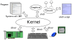

柴田祐樹
東京都立大学 情報科学科
\newcommand{\Fcon}{F_\mathrm{con}}
-
教員紹介
-
柴田 祐樹
-
太田 葵（TA）
-
後藤 優太（TA）
- 森井 祥弘（TA）
-
本実験の目的
-
アルゴリズムの実装だけでなくシステム全体を設計する能力の取得
-
作成したシステムの仕様と試験結果の報告
-
1日目:
-
RaspberryPi の基本設定・Linux の説明
-
ネットワーク診断の基礎練習，Bashの復習
-
2日目-4日目: 課題1と課題2
-
課題1: TCP/IP 上のアプリケーションプロトコル設計の基礎
-
課題2: 雑談アプリの作成
-
指導書（instructioin.pdf）第7節，テクニカル・ライティングを参照
-
最低基準に満たない質の場合再提出あり
-
課題1から通信を開始
-
他人と通信して実験
-
班の中で情報は共有して進捗は揃えること
-
進捗を揃える理由
-
通信（Communication）では通信規約に関し合意が必要
-
機械で行う前に作成者同士で意思疎通ができなければ達成不能
-
他人と協力することも実験の目的
-
プログラム，報告書の書き方のコツを共有してもらいたい．ただし剽窃は避けること
-
instruction.pdf: 実験指導書 (最新版を利用)
-
sup.pdf: 補助資料
-
tutorial.html: 本資料
-
bash_prac.sh: Bash 練習コマンド集（基礎演習のもの）
-
ソースコード
-
udp_time_client.cpp
-
udp_time_server.cpp
-
tcp_time_client.cpp
-
tcp_time_server.cpp
-
ソースコード
-
ex_gettimeofday.cpp: 時間計測
-
command.client.cpp: 課題2の参考
-
command.server.cpp: 課題2の参考
-
Makefile: コンパイルコマンドを記載したスクリプト
- 以下のものを配布
- Raspberry Pi 本体
- SD カード
- USB type-C 電源
- 電源スイッチ
- 筐体
- 放熱器
- HDMI ケーブル
-
プログラミング入門
- ターミナルを開き mkdir 任意のディレクトリ名（ここではAとする）を入力，階層を作成
- vscode か，geany で test.cpp を作成，この階層へ保存
- 階層 A で g++ test.cpp -o a.exeを実行してコンパイル
- ./a.exe を実行し，動作を確認
-
Kernel が中心
-
ハードウェアを抽象化
-
Shell, System Call (API) を提供

-
Shell: コマンド や ボタン
-
Command Line Interface (CLI)
-
Graphical User Interface (GUI)
-
ポインティング等空間的な操作
-
作図が容易
-
検索が困難
必須機能: ファイル検索，プログラムの起動
-
ファイル検索（操作）とプログラム起動における比較
-
CLI
-
検索: ls, cd, pwd, grep
-
操作: mkdir, rm, cp
-
起動: ./a.out
-
GUI
-
検索: ファイルエクスプローラ
-
操作: ドラックアンドドロップ，コピペ
-
起動: ダブルクリック，右クリック
CLI はシェルスクリプトとして手順自動化が容易
-
nano: 初心者用 CLIテキストエディタ
-
vim: 高機能CLIテキストエディタ
-
visual studio code: GUI のテキストエディタ
-
> プログラミング > Visual Studio Code
-
Alt + Z: 行の折り返し（Word wrap）を有効化
-
ファイル名に拡張子を着けることで配色に対応
-
もちろん nano, vi, vim, emacs などの利用も可
-
ソースファイルすべてと，Makefileを同じ階層に配置
-
端末で上記階層へ移動
-
コマンド make を実行
-
make
-
ファイルの更新を検出して更新されたもにのみMakefile中のコマンドを実行
-
Makefile の中身を確認: g++ のコンパイルコマンドが存在
-
詳しくは README.md を参照